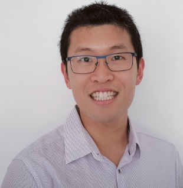
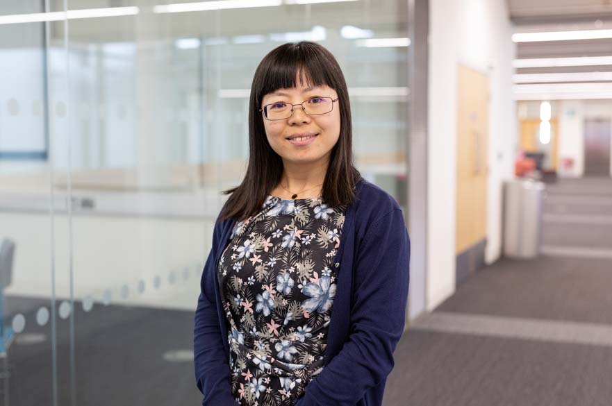
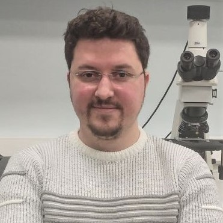

Principal Investigators

Dr Bernard Liew, University of Essex (UoE)
Senior Lecturer in Biomechanics, School of Sport, Rehabilitation and Exercise Sciences (SRES)
Dr Bernard Liew is a Lecturer in Biomechanics in the School of Sport, Rehabilitation and Exercise Sciences (SRES). He is a physiotherapist, with close to 10 years of experience in clinical biomechanics. He has led research at the intersection of clinical biomechanics, musculoskeletal, and finite element modelling (FEM).

Dr Leiming Gao, Nottingham Trent University (NTU)
Senior Lecturer Biomedical Engineering, Department of Engineering
Dr Leiming Gao is a Senior Lecturer in Biomedical Engineering. Leiming’s expertise lies in Biotribology, particularly lubrication and wear modelling of hip and knee joint replacements.
Dr Stephen McDonnell, University of Cambridge, Addenbrooke’s Hospital
Associate Professor & Consultant Orthopaedic Surgeon (Hip & Knee)
Dr Stephen McDonnell is an Associate Professor, as well as Consultant Orthopaedic Surgeon specialising in the hip and knee.

Professor Nelson Cortes, University of Essex (UoE)
Professor in Biomechanics, School of Sport, Rehabilitation and Exercise Sciences (SRES)
Professor Nelson Cortes is a Professor in Biomechanics at SRES, with expertise in clinical biomechanics and osteoarthritis research. He has secured and successfully managed research grants amounting to £7m.
Dr Wenxing Guo, University of Essex (UoE)
Lecturer in Statistics & Data Science, School of Mathematics, Statistics and Actuarial Science (SMSAS)
Dr Wenxing Guo is a Lecturer in Statistics and Data Science at SMSAS, with expertise in the statistical modelling of complex and high-dimensional data.

Professor Stefan Maas, Université du Luxembourg
Professor, Department of Engineering (DoE)
Professor Stefan Maas is a full professor at the Department of Engineering (DoE), with expertise in musculoskeletal and finite element modelling in the areas of joint replacements and lower limb trauma. He has collaborated closely with orthopaedic and trauma surgeons at the main hospital in Luxembourg, Saarland University Hospital.
Post-doc Researchers
Dr Ahmed Soliman, University of Luxembourg
Postdoctoral Researcher, Department of Engineering, Faculty of Science, Technology and Medicine
Dr. Ahmed Soliman specialises in biomechanics and orthopaedic engineering, with a focus on lower limb trauma and joint replacement. His expertise includes motion analysis, musculoskeletal simulation, numerical and experimental assessment of traumatic bone injuries and related orthopaedic devices, as well as the development of personalised 3D-printed implants. His current research focuses on improving the performance and longevity of orthopaedic implants.
Collaborators

Dr Zainab Altai, University of Essex (UoE)
Research Fellow (IPHW) in Biomechanics, School of Sport, Rehabilitation and Exercise Sciences
Dr Zainab Altai develops computational models of the human musculoskeletal system, combining motion capture, musculoskeletal and finite element modelling, wearable sensors, and machine learning.

Dr Alican Tuncay Alpkaya, Kırklareli University
Assistant Professor in Mechanical Engineering Department
Dr Alican Tuncay Alpkaya specialises in the finite element method, solid mechanics, wear, and material modelling.

Behnam Gholami, University of Essex (UoE)
Doctoral researcher, and research assistant in Biomechanics, School of Sport, Rehabilitation and Exercise Sciences (SRES)
Behnam Gholami is a doctoral researcher in Biomechanics and Computer Vision at the University of Essex. He leverages a strong foundation in biomedical and mechanical engineering to advance research in human pose estimation and machine learning. In addition to his work in AI deployment and data curation, he possesses advanced technical proficiency in vibration and control, solid mechanics, and the modeling of smart materials.